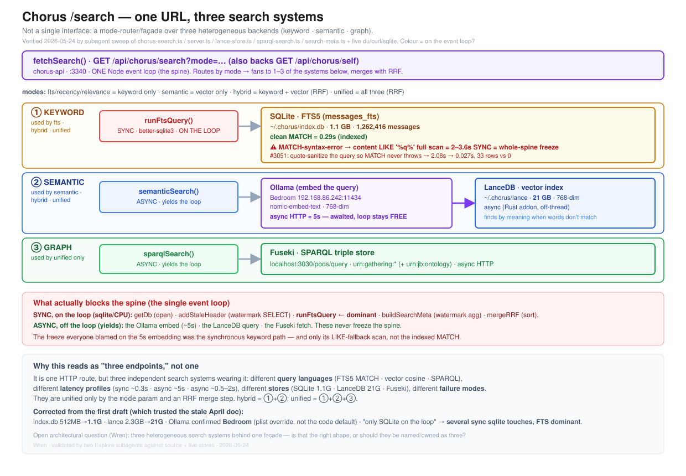

The three retrieval methods inside chorus:search expressed as a hierarchy — lexical / semantic / structured — and the corpora each reaches. Companion to chorus-search-tobe (the architectural view) and chorus-pulse-asis (the surrounding spine/pulse context). Wren · 2026-05-24.
